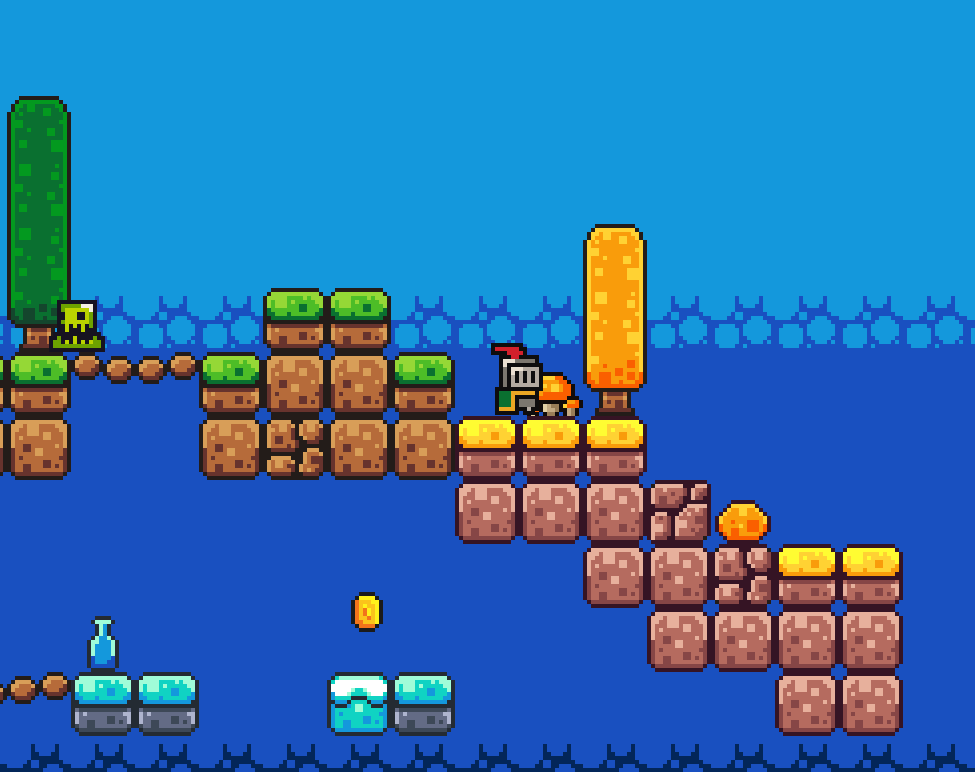

Knight's Journey
Technologies utilisées
- GDScript
Contexte
Dans ma démarche d'apprentissage, je me suis renseigné sur les différents moteurs de jeu sur le marché. J'ai appris l'existence de Godot. Étant donné sa bonne réputation et son utilisation fréquente dans les gamejam je me suis lancé dans l'apprentissage de ce moteur.
Pour cela, je me suis basé sur le travail fait dans la vidéo "How to make a Video Game - Godot Beginner Tutorial" de Brackeys (lien à la fin de l'article).
J'ai ajouté divers éléments tels qu'un menu, une condition de victoire ainsi que des changements de la carte afin de créer un premier jeu complet.
J'ai profité de ce jeu pour pouvoir publié mon premier jeu sur itch.io avec une version du jeu gratuite et jouable sur navigateur.
Principe du jeu
Le jeu est un jeu de plateforme 2D dans lequel le joueur incarne un chevalier. Ce chevalier doit récupérer les pièces éparpillées dans l'ensemble de la carte. Pour cela, le joueur devra esquiver des ennemies et réaliser des sauts précis.
